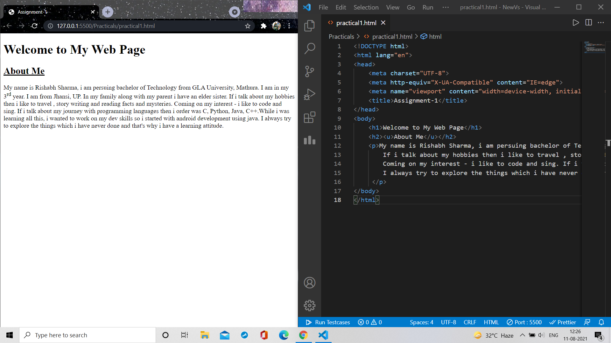

Visual Studio Code is a offline source-code editor made by Microsoft for Windows.
Visual Studio Code is a streamlined code editor with support for development operations like debugging, task running, and version control.
It aims to provide just the tools a developer needs for a quick code-build-debug cycle and leaves more complex workflows to fuller featured IDEs, such as Visual Studio IDE.
